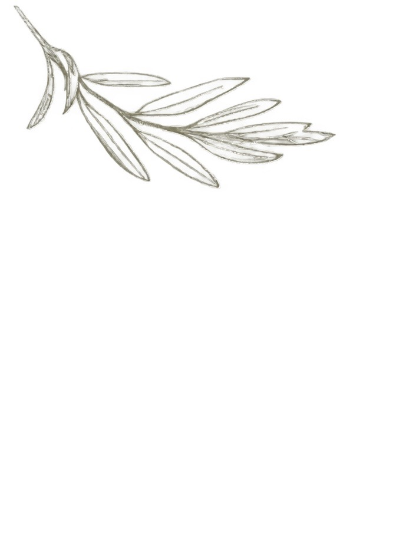

Sevgimizi ve geleceğimizi birleştirdiğimiz bu anlamlı günde yanımızda olmanızı dileriz.

19 EYLÜL 2026 · ESKİŞEHİR"Sizinle bu anı paylaşmak için sabırsızlanıyoruz."
Lütfen 12 Eylül'e kadar bildiriniz.
"Varlığınız ve sevginiz, hayatımızın bu en özel gününde bizim için en büyük hediyedir."